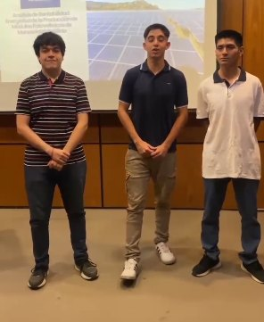
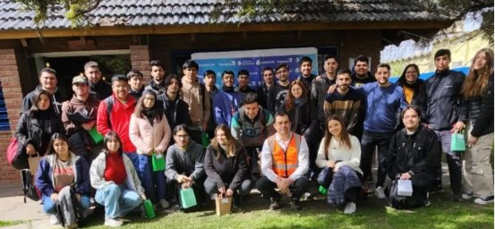
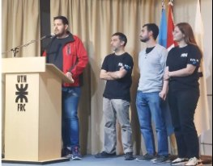
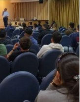
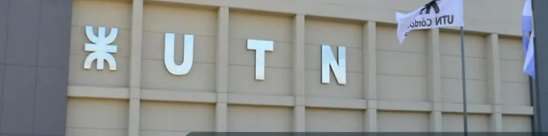

Obtención
De dónde salen los metales y cómo se extraen y refinan para que sean útiles.
UTN · Facultad Regional Córdoba
Metales, cerámicos, polímeros y compuestos: en Ingeniería Metalúrgica aprendés cómo están hechos por dentro, cómo se obtienen, cómo se transforman y cómo se reciclan.
Trivia · 5 preguntas
Poné a prueba lo que sabés. Spoiler: es mucho más que eso.
La carrera
Ingeniería Metalúrgica se ocupa del estudio de los materiales metálicos y no metálicos, desde su obtención hasta el reciclado. Combina la metalurgia tradicional con las tecnologías nuevas: simulación, impresión 3D, desarrollo de nuevos materiales y economía circular.
De dónde salen los metales y cómo se extraen y refinan para que sean útiles.
Fundición, conformado, soldadura y tratamientos térmicos para convertir materia prima en piezas.
Investigación y desarrollo: impresión 3D, simulación y materiales con propiedades a medida.
Economía circular: recuperar y volver a usar los materiales, cuidando el ambiente.

Competencias
Diseña, gestiona y mejora procesos y productos relacionados con metales y materiales no metálicos, asegurando el cumplimiento de estándares de calidad, seguridad y protección ambiental. También asesora en asuntos técnicos y económicos del área, y participa en el gerenciamiento de actividades industriales y comerciales.
Laboratorios y áreas de investigación
Salida laboral
Amplio espectro profesional que permite una rápida inserción laboral. Donde hay un material que elegir, procesar o mejorar, hay trabajo metalúrgico.

Selección de aceros y aleaciones livianas, procesos de estampado, fundición y tratamientos térmicos de piezas.
Producción y control de aceros y metales no ferrosos, diseño de moldes y procesos de colada.
Mejora de procesos de conformado, soldadura, mecanizado y recubrimientos.
Materiales que trabajan en condiciones extremas: alta temperatura, presión y corrosión.
Obtención y refinación de metales a partir de minerales y concentrados.
Recuperación de metales de chatarra y residuos electrónicos, con menor consumo de energía.
Ensayos mecánicos, metalografía, análisis de falla y certificación de normas.
Desarrollo de nuevos materiales, asesoramiento técnico-económico y proyectos propios.
Comunidad Metalúrgica



Ingreso
Las inscripciones cierran el 29 de noviembre. Te acompañamos en cada paso.
Completá el formulario de esta página. Te contactamos para validar tus datos y sumarte al grupo de aspirantes.
El Departamento ofrece un pre-cursillo específico para acompañarte y prepararte para los exámenes de ingreso.
Matemática, Física e Introducción a la Vida Universitaria. Al aprobarlos pasás a ser ingresante.
Completás la documentación y te inscribís al cursado. Bienvenido/a a Metalúrgica.
Preguntas frecuentes
No. La UTN es una universidad pública y la carrera de grado es gratuita.
No. Muchos estudiantes vienen de secundarios no técnicos. El pre-cursillo y el cursillo de ingreso están pensados para que todos lleguen con las bases necesarias.
El cursado es de 17:30 a 22:30 h, un horario que muchos estudiantes combinan con su trabajo.
Es un acompañamiento específico que ofrece el Departamento de Ingeniería Metalúrgica a sus aspirantes, para prepararlos para los módulos de ingreso.
Depende de tu situación: en algunos casos el ingreso puede aprobarse por equivalencia. Escribinos y lo revisamos con vos.
En la UTN Facultad Regional Córdoba, Maestro López esq. Cruz Roja Argentina, Ciudad Universitaria, Córdoba.
El 29 de noviembre. No lo dejes para último momento: preinscribite y te ayudamos con todo el trámite.
Te enviamos un email de confirmación. En breve te contactamos.